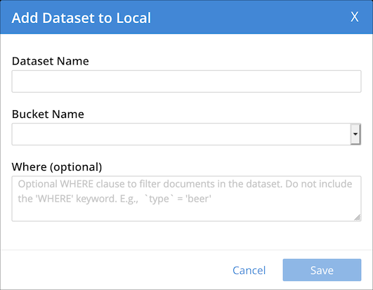
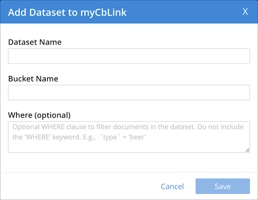
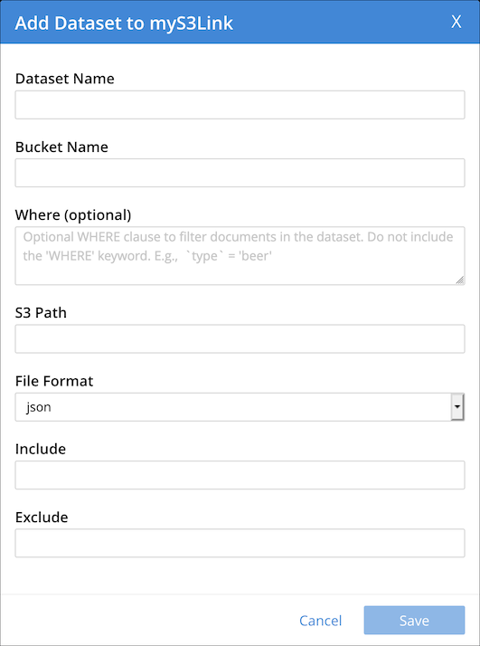
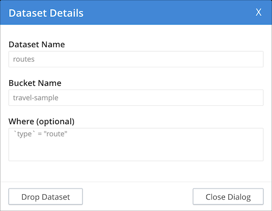

Managing Datasets
- Enterprise Edition
- Couchbase Server 6.6.1
In Couchbase Server 6.6.1 and later, the Analytics Workbench enables you to create, edit, and drop datasets. The Analytics Workbench also enables you to connect or disconnect local links and remote links.
Datasets are displayed in the insights sidebar of the Analytics Workbench. Each dataset is listed below the link on which it was created.
Refer to Datasets for further details on datasets.
Creating a Dataset on a Local Link
To create a dataset on a local link:
-
In the insights sidebar, click add dataset next to the local link where you want to create the dataset.
The Add Dataset to Local dialog is displayed.
 -
In the Dataset Name box, enter a name for the dataset.
-
Open the Bucket Name drop-down list and select the bucket which is the data source for this dataset.
-
If necessary, in the Where box, enter an expression to filter the documents in the dataset. You must not include the WHERE keyword, and the expression must be deterministic. For example,
`type` = beer. -
Choose Save to create the link, or Cancel to cancel.
You can also create a dataset on a local link using the CREATE DATASET statement. For more information about creating datasets, refer to Create Statements.
Creating a Dataset on a Remote Link
To create a dataset on a remote link:
-
In the insights sidebar, click add dataset next to the remote link where you want to create the dataset.
The Add Dataset to Link dialog is displayed, where Link is the name of the external link.
 -
In the Dataset Name box, enter a name for the dataset.
-
In the Bucket Name box, enter the name of the bucket on the remote Couchbase cluster which is the data source for this dataset.
-
If necessary, in the Where box, enter an expression to filter the documents in the dataset. You must not include the WHERE keyword, and the expression must be deterministic. For example,
`type` = beer. -
Choose Save to create the link, or Cancel to cancel.
You can also create a dataset on a remote link using the CREATE DATASET statement. For more information about creating datasets, refer to Create Statements.
Creating a Dataset on an External Link
To create a dataset on an external link:
-
In the insights sidebar, click add dataset next to the external link where you want to create the dataset.
The Add Dataset to Link dialog is displayed, where Link is the name of the external link.
 -
In the Dataset Name box, enter a name for the dataset.
-
In the Bucket Name box, enter the name of the Amazon S3 bucket which is the data source for this dataset.
-
If necessary, in the Where box, enter an expression to filter the documents in the dataset. You must not include the WHERE keyword, and the expression must be deterministic. For example:
`type` = beer. -
If necessary, in the S3 Path box, enter the path to the location of the data relative to the external data source. For example:
json-data/reviews. -
Open the File Format drop-down list and select the format of the external data:
-
JSON — Data is in JSON Lines format.
-
CSV — Data is in comma-separated values format.
-
TSV — Data is in tab-separated values format.
-
-
If you specified CSV or TSV file format, check the Header check box if the first row of the file should be skipped.
-
If you specified CSV or TSV file format, in the Null Value box, enter the string used in the external dataset to represent a
nullvalue. You may escape special characters using a backslash\. -
In the Include box, enter the names of the files to be included from the external dataset. The file name may include subdirectories of the location specified by the S3 Path option. Any files that do not match the specification are excluded. This option may not be used if the Exclude option is specified.
The file names may contain the following wildcard characters, in common with the Exclude option:
*— Matches anything
?— Matches any single character
[sequence]— Matches any characters in sequence
[!sequence]— Matches any characters not in sequenceFor example:
["*2018*.json", "*2019*.json"]. -
In the Exclude box, enter the names of the files to be excluded from the external dataset. The file name may include subdirectories of the location specified by the S3 Path option. Any files that do not match the specification are included. This option may not be used if the Include option is specified.
The file names may contain the same wildcard characters as the Include option. For example:
"*.?sv". -
Choose Save to create the link, or Cancel to cancel.
You can also create a dataset on an external link using the CREATE EXTERNAL DATASET statement. For more information about creating datasets, refer to Create Statements.
Connecting Datasets
When you have created one or more datasets on a local link or a remote link, you must connect the link, so that datasets on the link can shadow data from their data sources.
To connect a link, click the disconnected link icon next to the link name in the insights sidebar.
When the link is connected, a connected link icon is displayed next to the link name, and any datasets listed below that link are shown in black.
You can also connect a link using the CONNECT statement. For more information about connecting links, refer to Connect Statements.
Disconnecting Datasets
Disconnecting a local link or a remote link disconnects all datasets on that link from their data sources.
To disconnect a link, click the connected link icon next to the link name in the insights sidebar.
When the link is disconnected, a disconnected link icon is displayed next to the link name, and any datasets listed below that link are shown in orange.
You can also disconnect a link using the DISCONNECT statement. For more information on disconnecting links, refer to Disconnect Statements.
Viewing Dataset Summaries
You can view a summary of a dataset in the insights sidebar.
To display a summary of a dataset, click the dataset name in the insights sidebar, or click the rightward-pointing arrowhead before the dataset name.
The dataset summary appears below the dataset name, showing the name of the link on which the dataset was created, the name of the bucket which is the data source for this dataset, and the expression which filters the documents in the dataset.
When data ingestion is in progress, an indicator below each dataset shows the number of mutations that remain to be synchronized to that dataset. If the indicator is not displayed, then the dataset is up-to-date.
To hide the summary of a dataset, click the dataset name in the insights sidebar again, or click the downward-pointing arrowhead before the dataset name.
Viewing Dataset Details
To view the details of a dataset:
-
If necessary, in the insights sidebar, click the name of the dataset to display the dataset summary.
-
Click dataset details below the dataset name.
The Dataset Details dialog is displayed, showing details of the dataset. Note that you cannot change any of the details of the dataset.
 -
Choose Close Dialog to cancel.
Deleting a Dataset
To delete a dataset:
-
If necessary, in the insights sidebar, click the name of the dataset to display the dataset summary.
-
Click dataset details below the dataset name.
The Dataset Details dialog is displayed, showing details of the dataset.
-
Choose Drop Dataset to delete the dataset.
A message box appears, asking if you are sure that you want to delete the dataset.
-
Choose Continue to delete the dataset, or Cancel to cancel.
You can also delete a dataset using the DROP DATASET statement. For more information on deleting a dataset, refer to Drop Statements.